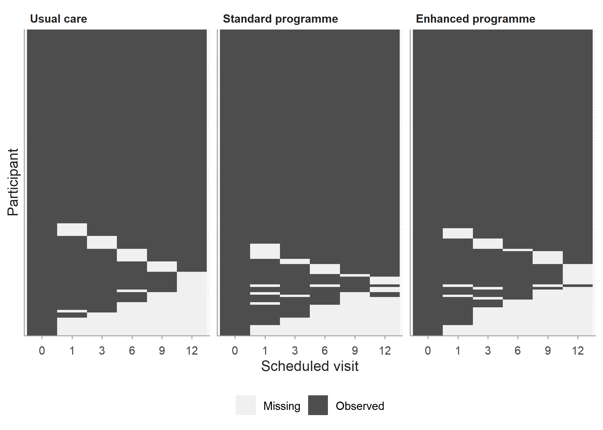
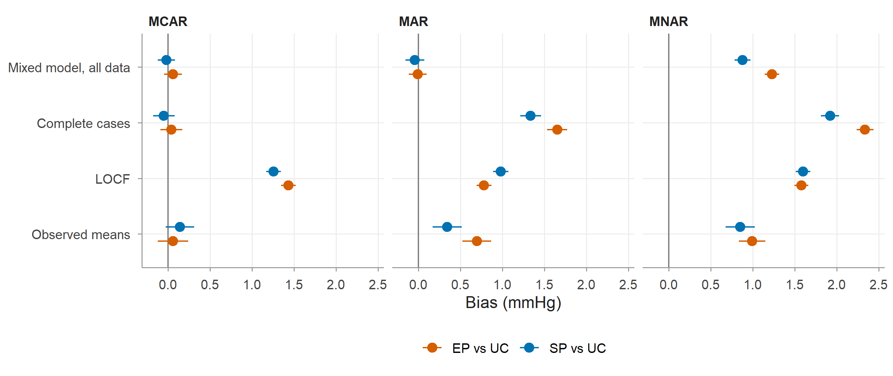
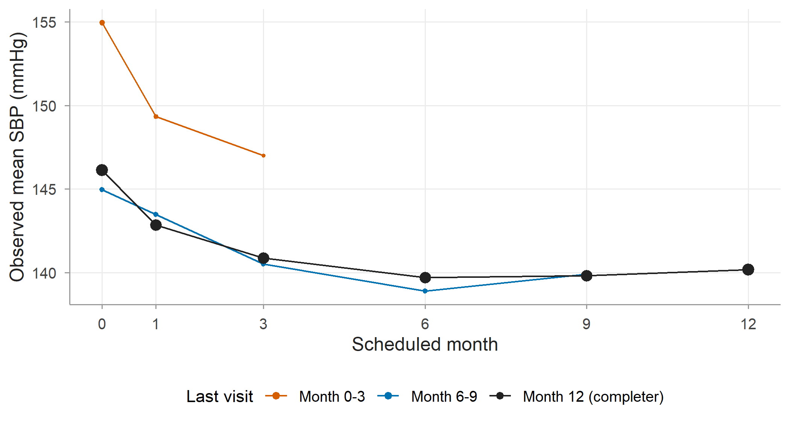
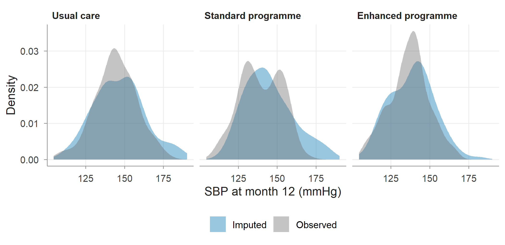
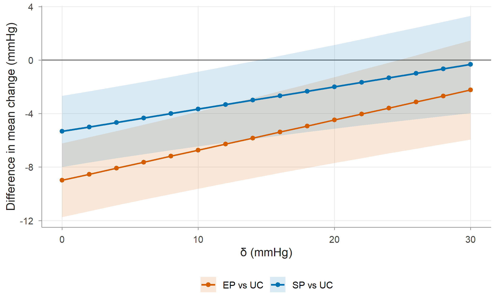
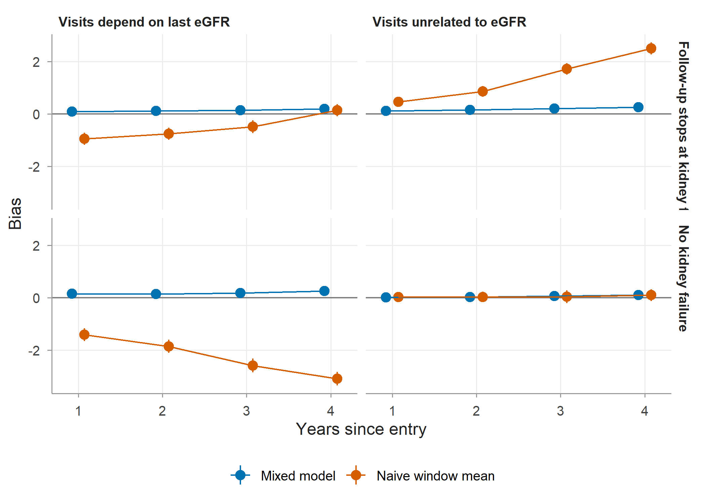

source(here::here("R", "setup.R"))
walk <- load_walk()
walk_b <- load_walk("baseline")
walk_w <- load_walk("wide")
walk_c <- load_walk("complete")
kidney <- load_kidney()
truth <- readRDS(here("data", "walk_truth.rds"))
f1 <- function(x) formatC(x, format = "f", digits = 1)
f2 <- function(x) formatC(x, format = "f", digits = 2)
pct <- function(x) paste0(round(100 * x), "%")
# Simulation results are produced by scripts/10b_missing_data_simulations.R
# (about 15 minutes). They are run here only if the saved tables are missing.
if (!file.exists(here("outputs", "tables", "m10_sim_mechanisms.csv")) ||
!file.exists(here("outputs", "tables", "m10_sim_visit_timing.csv"))) {
source(here("scripts", "10b_missing_data_simulations.R"), local = new.env())
}10 Missing data and dropout
Almost every longitudinal study loses data. Participants miss visits, leave the study early, or have covariates that were never recorded. Missing data reduce precision, but the more serious danger is bias: if the people who leave differ from those who stay in ways related to the outcome, an analysis of the people who remain can give the wrong answer, and no amount of sample size fixes it. This module shows how to describe missing data, explains the three mechanisms (MCAR, MAR, MNAR) and what each implies, shows why a likelihood-based mixed model of all observed data is valid under MAR while complete-case analysis and last observation carried forward are not, teaches multiple imputation that respects the longitudinal structure, and ends with sensitivity analysis for departures from MAR and with informative visit timing.
Learning outcomes
By the end of this module participants will be able to:
- 10.1 Classify intermittent missingness, dropout and missing covariates, and describe the missingness pattern in a dataset.
- 10.2 Define MCAR, MAR and MNAR with practical examples, and explain what observed data can and cannot establish about the missingness mechanism.
- 10.3 State the conditions under which a likelihood-based mixed-model analysis of the observed data is valid under MAR.
- 10.4 Show by simulation why last observation carried forward is generally unsuitable.
- 10.5 Carry out multiple imputation that respects the longitudinal or multilevel structure, and combine the results with Rubin’s rules.
- 10.6 Conduct and report a delta-adjustment sensitivity analysis for departures from MAR.
- 10.7 Explain the consequences of informative visit timing.
Prerequisites
Modules 4 and 6 (the WALK primary model and the difference in mean change at month 12), Module 2 (participant flow and missingness maps) and Module 5 (covariance structures). Module 7 introduced inverse-probability-weighted GEE, which is referred to briefly here.
WarningSimulated data
All examples use simulated data from fictional studies. Results illustrate methods; they are not empirical findings.
10.1 Kinds of missing data and the WALK pattern
Three kinds of missing data occur in longitudinal studies.
- Intermittent missingness: a participant misses a visit and returns later. In WALK, about 5% of scheduled visits were missed in this way.
- Dropout (monotone missingness): a participant leaves and is not seen again. Every later visit is missing. Dropout is usually the more worrying kind, because the reasons for leaving are often related to how the participant is doing.
- Missing covariates: a baseline or time-varying covariate is not recorded. In WALK all baseline covariates are complete; in many studies they are not.
A fourth situation is related but different: measurements that stop because of death or another terminal event (as with kidney failure in KIDNEY). After death, blood pressure is not “missing”, it does not exist, and the estimand must be defined with that in mind (International Council for Harmonisation of Technical Requirements for Pharmaceuticals for Human Use (ICH) 2019).
The first step is always to describe the pattern. In long data, missed visits are simply absent rows; the complete grid of scheduled visits shows what is missing. walk_complete.csv holds every scheduled visit together with an observed flag. In a real study this file does not exist, but the grid of scheduled visits does, and the observed flag can be built from the visit schedule.
pattern <- walk_c |>
arrange(id, visit) |>
group_by(id, arm) |>
summarise(pattern = paste(ifelse(observed, "O", "."), collapse = ""),
n_obs = sum(observed), last = max(visit[observed])) |>
ungroup() |>
mutate(type = case_when(
n_obs == 6 ~ "Complete",
n_obs == last ~ "Dropout only",
last == 6 ~ "Intermittent only",
TRUE ~ "Intermittent and dropout"))
count(pattern, pattern, sort = TRUE) |> head(8)#> # A tibble: 8 × 2
#> pattern n
#> <chr> <int>
#> 1 OOOOOO 238
#> 2 OOOOO. 20
#> 3 O..... 15
#> 4 O.OOOO 15
#> 5 OO.... 12
#> 6 OO.OOO 11
#> 7 OOO... 11
#> 8 OOO.OO 10table(pattern$type, pattern$arm)#>
#> UC SP EP
#> Complete 76 84 78
#> Dropout only 23 19 24
#> Intermittent and dropout 2 1 3
#> Intermittent only 19 16 15Each pattern is a string of six visits, with O for observed and . for missing. Of the 360 participants, 238 have complete data, 50 have only intermittent gaps and 72 drop out before month 12. Dropout ranges from 20 to 27 participants per arm.
plot_missing_map(walk_c, id, month_sched, observed,
order_by = as.numeric(observed) * visit) +
facet_wrap(~ arm, scales = "free_y", labeller = as_labeller(walk_arm_labels))
The next question is whether dropout is related to anything observed. A simple way is to model the probability of dropping out before each scheduled visit, among participants still in the study, as a function of the last observed SBP and the arm (a discrete-time dropout model):
risk <- walk_c |>
arrange(id, visit) |>
group_by(id) |>
mutate(last_sbp = sapply(seq_along(visit), function(k) sbp[max(which(observed[1:k]))])) |>
ungroup() |>
left_join(walk_b |> select(id, last_month_sched), by = "id") |>
group_by(id) |>
mutate(prev_sbp = lag(last_sbp), prev_sched = lag(month_sched)) |>
ungroup() |>
filter(visit > 1, prev_sched <= last_month_sched) |>
mutate(drop_now = as.integer(prev_sched == last_month_sched),
prev_sbp10 = (prev_sbp - 150) / 10)
m_drop <- glm(drop_now ~ prev_sbp10 + arm, family = binomial, data = risk)
fixef_table(m_drop, exponentiate = TRUE)#> term estimate se lower upper p
#> 1 (Intercept) 0.05286 0.20614 0.03529 0.07917 3.743e-46
#> 2 prev_sbp10 1.31720 0.09046 1.10319 1.57273 2.322e-03
#> 3 armSP 0.79466 0.30700 0.43537 1.45045 4.541e-01
#> 4 armEP 1.17643 0.28607 0.67153 2.06096 5.700e-01Each row of risk is a participant who is still in the study at the previous scheduled visit; drop_now is 1 if that previous visit was their last. The odds of dropping out are 1.32 times higher (95% CI 1.10 to 1.57) for every 10 mmHg higher last observed SBP. Dropout is therefore related to observed blood pressure, and the data are not MCAR. The next section explains what this does and does not tell us.
10.2 Missing-data mechanisms: MCAR, MAR and MNAR
Rubin (1976) classified missing data by how the probability of being missing relates to the data. Write \(\mathbf{y}_i\) for the complete vector of outcomes that participant \(i\) would have provided, split into the observed part \(\mathbf{y}_i^{o}\) and the missing part \(\mathbf{y}_i^{m}\), and let \(\mathbf{r}_i\) be the vector of indicators showing which values are observed. Covariates \(X_i\) are assumed fully observed.
- Missing completely at random (MCAR): \(P(\mathbf{r}_i \mid \mathbf{y}_i, X_i) = P(\mathbf{r}_i \mid X_i)\). Missingness does not depend on any outcome values, observed or not (it may depend on covariates; some authors call this covariate-dependent MCAR). Example: a WALK participant misses a visit because the clinic’s blood pressure monitor broke, or moves away for a new job.
- Missing at random (MAR): \(P(\mathbf{r}_i \mid \mathbf{y}_i, X_i) = P(\mathbf{r}_i \mid \mathbf{y}_i^{o}, X_i)\). Given the observed data, missingness does not depend on the unobserved values. Example: a participant whose SBP was high at their last visit is referred to their GP and leaves the study. The reason (the high reading) is recorded.
- Missing not at random (MNAR): missingness depends on unobserved values even after conditioning on the observed data. Example: a participant whose blood pressure has risen since their last visit feels unwell, suspects the programme is not working and stops attending; the rise itself is never measured.
These definitions are about the relationship between missingness and the data, not about whether the reason for missing data is “random” in everyday language. The names are standard but confusing: MAR is not random in the everyday sense.
The mechanism matters because it determines which analyses give valid answers. Under MCAR, the observed participants are a random subsample, so nearly any analysis is unbiased (though not efficient). Under MAR, analyses that use all the observed data through a correctly specified likelihood are valid, but analyses of completers or of observed means are not. Under MNAR, no analysis of the observed data alone is guaranteed to be valid, and one must make untestable assumptions about the missing values.
10.2.1 Consequences of each mechanism: a simulation on the complete WALK data
Because WALK is simulated, we can do what is impossible in a real study: start from the complete data, delete values under each mechanism, and see what happens. The script scripts/10b_missing_data_simulations.R does this 200 times per mechanism. In each replicate it imposes monotone dropout on walk_complete.csv: before each post-baseline visit, a participant still in the study leaves with probability \(\text{logit}^{-1}(a + b\,x)\), where
- MCAR: \(x = 0\) (leaving is unrelated to blood pressure);
- MAR: \(x\) is the change in SBP from baseline at the last observed visit;
- MNAR: \(x\) is the change in SBP from baseline at the visit about to be missed, which is never recorded.
The story is the same in both MAR and MNAR: participants whose blood pressure has risen become discouraged and leave. The difference is whether the rise that drives their decision was measured. It then estimates the difference in mean change at month 12 in four ways: observed means (mean SBP at month 12 among those seen, minus the baseline mean), last observation carried forward (LOCF), the primary mixed model fitted to completers only, and the primary mixed model fitted to all observed data. The benchmark is the same mixed model fitted to the complete data (no missingness), so the “bias” measures only the effect of missing data.
sim1 <- read_csv(here("outputs", "tables", "m10_sim_mechanisms.csv"),
show_col_types = FALSE) |>
mutate(mechanism = factor(mechanism, levels = c("MCAR", "MAR", "MNAR")),
method = factor(method, levels = c("Observed means", "LOCF",
"Complete cases",
"Mixed model, all data")))
sim1 |>
select(mechanism, method, arm, bias, mcse_bias, emp_se, dropout) |>
mutate(across(where(is.numeric), ~ round(., 2))) |>
arrange(mechanism, method, desc(arm))#> # A tibble: 24 × 7
#> mechanism method arm bias mcse_bias emp_se dropout
#> <fct> <fct> <chr> <dbl> <dbl> <dbl> <dbl>
#> 1 MCAR Observed means SP 0.14 0.09 1.22 0.38
#> 2 MCAR Observed means EP 0.06 0.09 1.32 0.38
#> 3 MCAR LOCF SP 1.26 0.04 0.62 0.38
#> 4 MCAR LOCF EP 1.43 0.04 0.62 0.38
#> 5 MCAR Complete cases SP -0.05 0.07 0.93 0.38
#> 6 MCAR Complete cases EP 0.04 0.07 0.93 0.38
#> 7 MCAR Mixed model, all data SP -0.02 0.05 0.74 0.38
#> 8 MCAR Mixed model, all data EP 0.06 0.05 0.76 0.38
#> 9 MAR Observed means SP 0.34 0.09 1.25 0.33
#> 10 MAR Observed means EP 0.7 0.09 1.24 0.33
#> # ℹ 14 more rowsggplot(sim1, aes(bias, method, colour = arm)) +
geom_vline(xintercept = 0, colour = "grey50") +
geom_pointrange(aes(xmin = bias - 1.96 * mcse_bias, xmax = bias + 1.96 * mcse_bias),
position = position_dodge(width = 0.5)) +
facet_wrap(~ mechanism) +
scale_colour_arm(name = NULL, labels = c(SP = "SP vs UC", EP = "EP vs UC")) +
labs(x = "Bias (mmHg)", y = NULL)
About 32% to 38% of participants drop out in each scenario. The pattern in Figure 10.2 is the central lesson of the module.
- Under MCAR every method except LOCF is essentially unbiased. LOCF underestimates the EP effect by 1.43 mmHg even though the dropout is completely random (the reason is explained in the LOCF section).
- Under MAR the mixed model using all observed data remains unbiased (-0.01 mmHg for EP), but complete-case analysis is biased by 1.65 mmHg and observed means by 0.70 mmHg. All the biased methods pull the effect towards zero here, because participants whose SBP rises, more common under usual care, leave and take their poor results with them.
- Under MNAR every method is biased, including the mixed model (1.23 mmHg for EP). The mixed model is less biased than complete-case analysis and LOCF, but here no better than the observed means: once the mechanism is MNAR, using the observed data well no longer guarantees anything.
The column emp_se is the standard deviation of the estimates across the 200 dropout patterns. It measures only the variation caused by which values happen to be deleted (the complete data are fixed), so it is not the usual sampling standard error. It shows that the mixed model also uses the data more efficiently than complete-case analysis or observed means.
10.2.2 What the observed data can and cannot tell us
The observed data can show that data are not MCAR: if dropout is related to observed SBP, as in the WALK dropout model above, MCAR is untenable. They cannot distinguish MAR from MNAR. The reason is fundamental: MNAR means that missingness depends on values we did not observe, and we have no data on those values. For every MNAR model, there is an MAR model that fits the observed data exactly as well but implies different values for the missing data (Molenberghs and Kenward 2007). Any “test” of MAR against MNAR rests on assumptions (such as normality of the complete data) that are themselves untestable.
The simulation makes this concrete. Take one replicate under MAR and one under MNAR and fit the same dropout model to each, using only what an analyst would see:
impose_dropout <- function(d, mechanism, a = -2.3, b = 0.15) {
d <- arrange(d, id, visit)
sbp <- matrix(d$sbp, ncol = 6, byrow = TRUE)
keep <- matrix(TRUE, nrow(sbp), 6)
for (k in 2:6) {
x <- switch(mechanism, MAR = sbp[, k - 1] - sbp[, 1], MNAR = sbp[, k] - sbp[, 1])
keep[, k] <- keep[, k - 1] & !(runif(nrow(sbp)) < plogis(a + b * x))
}
d$obs_sim <- as.vector(t(keep)); d
}
observed_dropout_model <- function(d) {
r <- d |> arrange(id, visit) |> group_by(id) |>
mutate(last_change = lag(sbp) - sbp[1], at_risk = lag(obs_sim)) |>
ungroup() |> filter(visit > 1, at_risk)
coef(summary(glm(!obs_sim ~ last_change, family = binomial, data = r)))[2, ]
}
set.seed(11)
rbind(MAR = observed_dropout_model(impose_dropout(walk_c, "MAR")),
MNAR = observed_dropout_model(impose_dropout(walk_c, "MNAR")))#> Estimate Std. Error z value Pr(>|z|)
#> MAR 0.14476 0.01603 9.028 1.744e-19
#> MNAR 0.09709 0.01531 6.340 2.298e-10In both data sets, dropout is clearly related to the last observed change in SBP. Under MNAR the association arises because the last observed change is correlated with the unobserved current change that really drives dropout. An analyst who sees only the observed data cannot tell the two situations apart, yet the mixed model is unbiased in one and biased in the other. The choice between MAR and MNAR must therefore be justified by knowledge of the study (why do people leave? were reasons recorded?) and examined by sensitivity analysis, not by a statistical test.
NoteWhy this matters
Reports that “Little’s test showed the data were MCAR” or “missingness was tested and found to be MAR” misunderstand what data can show. At most, data can show evidence against MCAR. MAR is an assumption, chosen because it is plausible and analysable, and it should be accompanied by sensitivity analyses (National Research Council 2010; Carpenter and Kenward 2013).
10.3 The mixed model of all observed data under MAR
10.3.1 The research question and estimand
The estimand is the WALK primary estimand: the difference in mean change in SBP from baseline to month 12 between each programme and usual care, in the population of randomised participants, as if all participants had been followed up under their assigned treatment. This is a treatment-policy-style estimand for a trial where dropout does not change the treatment received (an assumption of this simulation; real estimand frameworks require a decision on what happens after dropout (International Council for Harmonisation of Technical Requirements for Pharmaceuticals for Human Use (ICH) 2019)). Because the data are simulated, its true values are −4.6 mmHg (SP) and −8.1 mmHg (EP).
10.3.2 Data structure and outcome types
Long-format data with one row per attended visit. Missed visits need no rows. Participants with only a baseline measurement still contribute. The outcome here is continuous; the same argument applies to GLMMs fitted by maximum likelihood (Module 8).
10.3.3 Intuition
A mixed model learns, from the participants who stayed, how SBP at later visits relates to SBP at earlier visits (through the random effects and the residual correlation). For a participant who left after month 3, the model uses their observed values at months 0, 1 and 3 to predict where they would have been, in effect filling in their trajectory from the information they did provide. If dropout depends only on the observed values (MAR), participants with the same observed history who stayed and who left have the same distribution of future SBP, so the stayers are a valid guide to the leavers. Complete-case analysis discards that information, and observed means compare different groups of people at different visits.
10.3.4 The model
The analysis model is the primary model,
\[ y_{ij} = \mathbf{x}_{ij}^\top\boldsymbol\beta + b_{0i} + b_{1i}t_{ij} + \varepsilon_{ij}, \qquad \mathbf{y}_i \sim N(X_i\boldsymbol\beta,\; V_i), \quad V_i = Z_i G Z_i^\top + \sigma^2 I, \]
with a mean for each arm at each scheduled visit in \(X_i\boldsymbol\beta\), random intercept and slope on actual time \(t_{ij}\) with covariance matrix \(G\), and residual variance \(\sigma^2\). Write \(\boldsymbol\theta = (\boldsymbol\beta, G, \sigma^2)\) for the parameters of the outcome model and \(\boldsymbol\psi\) for the parameters of the missingness model \(P(\mathbf{r}_i \mid \mathbf{y}_i, X_i, \boldsymbol\psi)\). The likelihood of what was actually seen, the observed outcomes and the missingness pattern, factorises under MAR:
\[ f(\mathbf{y}_i^{o}, \mathbf{r}_i \mid X_i, \boldsymbol\theta, \boldsymbol\psi) = \underbrace{f(\mathbf{y}_i^{o} \mid X_i, \boldsymbol\theta)}_{\text{outcome model}} \times \underbrace{P(\mathbf{r}_i \mid \mathbf{y}_i^{o}, X_i, \boldsymbol\psi)}_{\text{missingness model}} . \]
Here \(f(\mathbf{y}_i^{o} \mid X_i, \boldsymbol\theta)\) is simply the multivariate normal density of the observed elements of \(\mathbf{y}_i\), with mean and covariance taken from the rows and columns of \(X_i\boldsymbol\beta\) and \(V_i\) that correspond to the attended visits. This is exactly what lmer() maximises. If, in addition, \(\boldsymbol\theta\) and \(\boldsymbol\psi\) are separable (distinct, with no shared parameters or constraints), the second factor does not involve \(\boldsymbol\theta\), and maximising the first factor alone gives valid likelihood-based inference about \(\boldsymbol\theta\). The missingness mechanism is then called ignorable for likelihood inference (Rubin 1976; Little and Rubin 2019; Molenberghs and Kenward 2007).
10.3.5 Assumptions and limitations
A likelihood-based mixed-model analysis of the observed data is valid under these conditions:
- MAR: missingness depends only on observed data (observed outcomes and covariates in the model).
- Separability: the parameters of the outcome model and of the missingness model are distinct. Together with MAR this makes the mechanism ignorable.
- A correctly specified model for the joint distribution of the repeated outcomes, both mean and covariance. Under MAR the model’s implied conditional distribution of later values given earlier ones is what predicts the missing data. A misspecified covariance structure, harmless with complete data, can bias the mean under MAR (unlike GEE with complete data, where only the mean must be right).
- The variables that drive dropout are in the model. MAR is relative to the variables included. In WALK dropout depends on the last observed SBP, which is the outcome itself and therefore automatically in the likelihood, and on arm, which is in the mean model. If dropout depended on a variable not in the model (for example, a side effect recorded at each visit), the analysis would be MNAR with respect to the model’s variables; such auxiliary variables can be added to the model if they are baseline covariates, or used through multiple imputation if they are post-baseline.
- Inference uses the full likelihood, which
lmer()does, with standard errors from the observed information. (GEE is not likelihood-based and needs MCAR, or weighting under MAR: Module 7.)
None of these conditions can be fully verified from the data. Condition 1 in particular is an assumption, to be assessed with sensitivity analyses.
10.3.6 Fitting the model in R
There is nothing special to do: fit the primary model to all observed rows.
m_lmm <- lmer(sbp ~ visit_f * arm + (1 + month | id), data = walk,
control = lmer_ctrl)
completers <- walk_b$id[!walk_b$dropout]
m_cc <- lmer(sbp ~ visit_f * arm + (1 + month | id),
data = filter(walk, id %in% completers), control = lmer_ctrl)
m_full <- lmer(sbp ~ visit_f * arm + (1 + month | id), data = walk_c,
control = lmer_ctrl) # simulation only
locf <- walk |>
group_by(id, arm) |>
summarise(base = sbp[visit == 1], last = sbp[which.max(visit)]) |>
ungroup()
m_locf <- lm(I(last - base) ~ arm, data = locf)10.3.7 Interpreting the output
diff_change <- function(m) {
e <- emmeans(m, ~ visit_f | arm, at = list(visit_f = c("0", "12")))
ch <- contrast(e, list(change = c(-1, 1)), by = "arm")
as.data.frame(summary(contrast(ch, "trt.vs.ctrl", by = NULL),
infer = TRUE, adjust = "none"))
}
lt <- fixef_table(m_locf) |> filter(term != "(Intercept)")
comp <- bind_rows(
diff_change(m_full) |> mutate(analysis = "Complete data (simulation only)"),
diff_change(m_lmm) |> mutate(analysis = "Mixed model, all observed data"),
diff_change(m_cc) |> mutate(analysis = "Mixed model, completers only"),
data.frame(contrast = c("change SP - change UC", "change EP - change UC"),
estimate = lt$estimate, SE = lt$se, lower.CL = lt$lower,
upper.CL = lt$upper, analysis = "LOCF"))
comp |> select(analysis, contrast, estimate, SE, lower.CL, upper.CL) |>
mutate(across(where(is.numeric), ~ round(., 2)))#> analysis contrast estimate SE
#> 1 Complete data (simulation only) change SP - change UC -5.67 1.32
#> 2 Complete data (simulation only) change EP - change UC -8.40 1.32
#> 3 Mixed model, all observed data change SP - change UC -5.38 1.42
#> 4 Mixed model, all observed data change EP - change UC -8.97 1.44
#> 5 Mixed model, completers only change SP - change UC -5.77 1.47
#> 6 Mixed model, completers only change EP - change UC -9.20 1.50
#> 7 LOCF change SP - change UC -5.13 1.22
#> 8 LOCF change EP - change UC -8.69 1.22
#> lower.CL upper.CL
#> 1 -8.26 -3.09
#> 2 -10.98 -5.81
#> 3 -8.17 -2.58
#> 4 -11.79 -6.15
#> 5 -8.66 -2.88
#> 6 -12.14 -6.26
#> 7 -7.51 -2.74
#> 8 -11.07 -6.31| Analysis | Uses | SP vs UC | EP vs UC |
|---|---|---|---|
| Complete data | all 2,160 scheduled visits (simulation only) | -5.67 | -8.40 |
| Mixed model, all observed | 1897 attended visits of 360 participants | -5.38 (SE 1.42) | -8.97 (SE 1.44) |
| Mixed model, completers | 288 participants seen at month 12 | -5.77 (SE 1.47) | -9.20 (SE 1.50) |
| LOCF | last value of every participant | -5.13 (SE 1.22) | -8.69 (SE 1.22) |
In this one data set the four analyses agree to within about one mmHg. That is not a contradiction of the simulation: WALK has moderate dropout (20% of participants), its dropout depends on the SBP level rather than on change, and a single data set shows sampling error as well as bias. The complete-data estimates themselves (-5.67 and -8.40) differ from the truth (−4.6 and −8.1) by sampling error alone. The mixed model of all observed data is the analysis whose validity rests on the weakest assumption (MAR), and it uses every observation; its confidence interval for EP versus usual care, -8.97 (-11.79 to -6.15), contains the true value. Complete-case analysis discards 72 participants and is valid only under MCAR. LOCF answers a different question (the change to the last visit attended, whenever that was) and its standard error is too small, because it treats imputed values as if they were observed.
10.3.8 Checking the model
Because validity under MAR depends on the whole model being right, check the covariance structure (Module 5) and residuals (Module 11) as for complete data. Two missing-data checks are useful. First, plot observed mean profiles by dropout pattern (time of last visit): if the patterns differ, dropout is related to the outcome, and an MCAR-based analysis is inappropriate. Second, compare the model-based fitted means with the observed means: under MAR they should differ when dropout is related to the outcome, because the model corrects for the selective loss of participants.
walk |>
left_join(walk_b |> select(id, last_month_sched), by = "id") |>
mutate(last = factor(ifelse(last_month_sched == 12, "Month 12 (completer)",
ifelse(last_month_sched <= 3, "Month 0-3", "Month 6-9")),
levels = c("Month 0-3", "Month 6-9", "Month 12 (completer)"))) |>
group_by(last, month_sched) |>
summarise(sbp = mean(sbp), n = n()) |>
ggplot(aes(month_sched, sbp, colour = last)) +
geom_line() + geom_point(aes(size = n)) +
scale_size_area(max_size = 3, guide = "none") +
scale_colour_manual(values = c("#D55E00", "#0072B2", "#222222"), name = "Last visit") +
scale_x_continuous(breaks = c(0, 1, 3, 6, 9, 12)) +
labs(x = "Scheduled month", y = "Observed mean SBP (mmHg)")
10.3.9 Reporting
TipReporting example
Of 360 randomised participants, 72 (20%) dropped out before month 12 and 50 had intermittently missed visits. Dropout was more likely after a higher SBP (odds ratio 1.32 per 10 mmHg of the last observed SBP, 95% CI 1.10 to 1.57), so the data are not consistent with MCAR. The primary analysis used a linear mixed model of all observed SBP values, which is valid if data are missing at random given the observed outcomes and arm. The difference in mean change from baseline to month 12 was -5.4 (-8.2 to -2.6) mmHg for the standard programme and -9.0 (-11.8 to -6.1) mmHg for the enhanced programme versus usual care. Sensitivity to departures from MAR was assessed by delta-adjusted multiple imputation (see below).
10.3.10 Common mistakes
ImportantCommon mistakes
- Restricting the mixed model to completers “to be safe”. It is less safe: valid only under MCAR, and less precise.
- Claiming that the data were shown to be MAR. Data can show evidence against MCAR, never in favour of MAR.
- Imputing first and then fitting the mixed model to imputed values as if observed. Single imputation understates uncertainty.
- Leaving out variables that drive dropout and are available, when they can be included in the model or imputation.
- Using GEE without weights when dropout depends on observed outcomes (Module 7).
10.4 Last observation carried forward
LOCF replaces every missing value after dropout by the participant’s last observed value. It is simple and was once standard in trials. It is generally unsuitable (Molenberghs and Kenward 2007; Mallinckrodt et al. 2008; National Research Council 2010), and the simulation above shows why.
LOCF assumes that a participant’s outcome would have stayed exactly at their last observed value. In WALK, SBP in the programme arms falls over the first six months. A programme participant who leaves at month 1 has their month-1 value carried to month 12, before most of the benefit has appeared. Even if dropout is completely random, carrying forward early values in all arms dilutes the treatment effect, because the arms differ more at month 12 than at month 1. The MCAR results in Figure 10.2 show exactly this: LOCF is biased by 1.26 (SP) and 1.43 mmHg (EP) under MCAR, while every other method is unbiased.
The direction of the bias is not predictable in general. If the outcome worsened over time (as in a progressive disease) LOCF could favour the arm with earlier dropout; whether it is “conservative” depends on the trajectories and dropout patterns in each arm, which differ between studies. LOCF also understates uncertainty: the carried-forward values are treated as real measurements, so the variability of SBP after dropout is ignored. In the simulation the LOCF estimates vary least across dropout patterns (emp_se), a precision that is illusory because they are consistently wrong.
ImportantCommon mistakes
- Calling LOCF “conservative”. It can bias in either direction.
- Using LOCF because MAR is “an assumption”. LOCF makes a stronger and less plausible assumption (no change after dropout) and is biased even under MCAR.
- Using baseline observation carried forward (BOCF) for continuous outcomes without stating that it defines a different estimand (a participant who leaves is assumed to return to baseline).
10.5 Multiple imputation for longitudinal data
10.5.1 The research question and estimand
The estimand is unchanged: the difference in mean change at month 12. Multiple imputation (MI) is an alternative route to MAR-valid inference. It is useful when (a) the analysis model cannot itself handle missing data in the way required (for example an ANCOVA at month 12, or missing covariates), (b) post-baseline auxiliary variables that predict dropout should be used without putting them in the analysis model, or (c) a sensitivity analysis modifies the imputed values, as in delta adjustment below (Carpenter and Kenward 2013; Buuren 2018).
10.5.2 Data structure and outcome types
MI needs the variables that will be imputed and the variables used to predict them. For longitudinal outcomes there are two layouts. In wide format (one row per participant, one column per scheduled visit), each visit is a separate variable and the imputation model for one visit conditions on the others. In long format (one row per scheduled visit), a multilevel imputation model with random effects represents the correlation between visits. Wide format is natural for fixed schedules like WALK; long format is needed when times are irregular or there are many occasions.
10.5.3 Intuition
MI fills each missing value with a random draw from its predicted distribution given the observed data, and does this \(m\) times to create \(m\) completed data sets. Each data set is analysed as if it were complete. The variation between the \(m\) results reflects the uncertainty about the missing values; the average variation within them reflects ordinary sampling uncertainty. Rubin’s rules combine the two. The imputation model must contain everything the analysis model needs (here the arm-by-visit structure) and should contain the variables that drive missingness; otherwise the imputations are biased towards the null for the omitted relations.
10.5.4 The model
Imputation model, wide format. For each scheduled visit \(v\) with missing values, mice fits a linear regression of \(y_{iv}\) on the other visits and the baseline covariates, separately within each arm \(a\):
\[ y_{iv} = \gamma_{0av} + \sum_{u \neq v} \gamma_{auv}\, y_{iu} + \mathbf{z}_i^\top\boldsymbol\delta_{av} + e_{iv}, \qquad e_{iv} \sim N(0, \omega_{av}^2), \]
where \(\mathbf{z}_i\) holds age, sex and BMI. Missing values of \(y_{iv}\) are drawn from this regression with parameters themselves drawn from their posterior distribution (Bayesian linear regression, method "norm"), and the procedure cycles through the visits (chained equations). Imputing separately by arm lets every coefficient differ between arms, so the imputation model is at least as rich as the arm-by-visit analysis model.
Imputation model, long format. A linear mixed model,
\[ y_{ij} = \mathbf{x}_{ij}^\top\boldsymbol\beta + b_{0i} + b_{1i}t_{ij} + \varepsilon_{ij}, \]
with \(\mathbf{x}_{ij}\) containing the visit-by-arm indicators, is fitted to the observed data; missing \(y_{ij}\) are drawn from the fitted model, including draws of the random effects of participant \(i\) given their observed values (mice method "2l.norm", which also allows each participant their own residual variance).
Rubin’s rules. With \(m\) estimates \(\hat Q_k\) and their variances \(U_k\),
\[ \bar Q = \frac{1}{m}\sum_{k=1}^m \hat Q_k, \quad \bar U = \frac{1}{m}\sum_k U_k, \quad B = \frac{1}{m-1}\sum_k (\hat Q_k - \bar Q)^2, \quad T = \bar U + \left(1 + \frac{1}{m}\right) B . \]
\(\bar Q\) is the MI estimate, \(\bar U\) the within-imputation variance, \(B\) the between-imputation variance and \(T\) the total variance; intervals use a \(t\) distribution with degrees of freedom that depend on the fraction of missing information, \(\lambda = (1 + 1/m)B/T\) (Little and Rubin 2019).
10.5.5 Assumptions and limitations
MI is valid under MAR if the imputation model is correctly specified and congenial with the analysis model (it includes all the variables and interactions of the analysis model, and possibly more). Imputing without arm, or with arm as a main effect only, would bias the treatment effect towards zero. Wide-format MI needs a common schedule; actual visit times are ignored. The long-format 2l.norm model assumes the random-effects structure is right. MI and the likelihood analysis of the same model give similar answers under MAR; MI earns its keep when auxiliary variables are added or when the imputations are modified for sensitivity analysis. Results vary slightly with the random seed; use enough imputations that the Monte Carlo error is small (50 here).
10.5.6 Fitting the model in R
(a) Wide format, by arm.
walk_w <- walk_w |> mutate(age10 = (age - 60) / 10, bmi_c = bmi - 29)
imp_vars <- c("age10", "sex", "bmi_c", paste0("sbp_m", c(0, 1, 3, 6, 9, 12)))
m_imp <- 50
imp_wide <- lapply(levels(walk_w$arm), function(a) {
d <- walk_w |> filter(arm == a) |> select(id, all_of(imp_vars))
pm <- make.predictorMatrix(d); pm[, "id"] <- 0 # id is not a predictor
mice(d, m = m_imp, method = "norm", predictorMatrix = pm, maxit = 10,
seed = 2026, printFlag = FALSE)
})
names(imp_wide) <- levels(walk_w$arm)
completed_wide <- function(k) {
bind_rows(lapply(names(imp_wide), function(a)
mice::complete(imp_wide[[a]], k) |> mutate(arm = a))) |>
mutate(arm = factor(arm, levels = c("UC", "SP", "EP")))
}Each completed data set has SBP at every visit for all 360 participants, so the month-12 estimand can be estimated by a simple regression of change on arm. mice’s own pool() needs a tidier for each model type, so we apply Rubin’s rules directly with pool.scalar():
rubin <- function(est, se, n = Inf, k = 1) {
p <- mice::pool.scalar(Q = est, U = se^2, n = n, k = k)
q <- qt(0.975, p$df)
data.frame(estimate = p$qbar, within = p$ubar, between = p$b, total = p$t,
se = sqrt(p$t), df = p$df, fmi = p$fmi,
lower = p$qbar - q * sqrt(p$t), upper = p$qbar + q * sqrt(p$t))
}
post_drop <- walk_b |> select(id, last_month_sched)
delta_fit <- function(delta, arms_shift = c("SP", "EP")) {
res <- lapply(seq_len(m_imp), function(k) {
d <- completed_wide(k) |>
left_join(post_drop, by = "id") |>
mutate(sbp_m12 = sbp_m12 + ifelse(arm %in% arms_shift &
last_month_sched < 12, delta, 0))
f <- lm(I(sbp_m12 - sbp_m0) ~ arm, data = d)
data.frame(term = c("SP", "EP"), est = coef(f)[2:3],
se = sqrt(diag(vcov(f)))[2:3])
}) |> bind_rows()
bind_rows(lapply(c("SP", "EP"), function(tm) {
r <- filter(res, term == tm)
rubin(r$est, r$se, n = nrow(walk_w), k = 3) |> mutate(term = tm)
})) |> mutate(delta = delta)
}
mi_wide <- delta_fit(0) # delta = 0: plain MAR imputation
mi_wide#> estimate within between total se df fmi lower upper term
#> 1 -5.329 1.619 0.2085 1.832 1.353 288.9 0.1221 -7.993 -2.665 SP
#> 2 -8.982 1.619 0.3359 1.962 1.401 247.8 0.1812 -11.740 -6.223 EP
#> delta
#> 1 0
#> 2 0(delta_fit() is written with a delta argument for the sensitivity analysis later; with delta = 0 it is ordinary MAR-based MI.)
(b) Long format, multilevel (2l.norm). The data need a row for every scheduled visit, an integer cluster identifier, the fixed-effect columns written out explicitly, and a predictor matrix that marks the cluster variable (−2), the fixed effects (1) and the random effects (2). For missed visits the actual time is unknown, so the scheduled month is used.
long_grid <- walk_c |>
mutate(sbp = ifelse(observed, sbp, NA),
month = ifelse(observed, month, month_sched),
idn = as.integer(factor(id)))
X <- model.matrix(~ visit_f * arm, long_grid)[, -1]
colnames(X) <- make.names(colnames(X))
ld <- data.frame(idn = long_grid$idn, sbp = long_grid$sbp, X,
month = long_grid$month, cons = 1)
meth <- make.method(ld); meth[] <- ""; meth["sbp"] <- "2l.norm"
pred <- make.predictorMatrix(ld); pred[, ] <- 0
pred["sbp", ] <- 1 # fixed effects
pred["sbp", "sbp"] <- 0
pred["sbp", "idn"] <- -2 # cluster identifier
pred["sbp", c("cons", "month")] <- 2 # random intercept and slope
m_imp_long <- 20
imp_long <- mice(ld, m = m_imp_long, method = meth, predictorMatrix = pred,
maxit = 1, seed = 2027, printFlag = FALSE)#> Warning: Number of logged events: 1Only SBP is incomplete, so one iteration (maxit = 1) is enough: there is nothing to cycle through. Each completed long data set is then analysed with the primary mixed model and the month-12 interaction terms are pooled:
res_long <- lapply(seq_len(m_imp_long), function(k) {
d <- long_grid |> mutate(sbp = mice::complete(imp_long, k)$sbp)
s <- coef(summary(lmer(sbp ~ visit_f * arm + (1 + month | id), data = d,
control = lmer_ctrl)))
data.frame(term = c("SP", "EP"),
est = s[c("visit_f12:armSP", "visit_f12:armEP"), 1],
se = s[c("visit_f12:armSP", "visit_f12:armEP"), 2])
}) |> bind_rows()
mi_long <- bind_rows(lapply(c("SP", "EP"), function(tm) {
r <- filter(res_long, term == tm)
rubin(r$est, r$se, n = 360, k = 3) |> mutate(term = tm)
}))
mi_long#> estimate within between total se df fmi lower upper term
#> 1 -4.761 1.832 0.1778 2.018 1.421 281.4 0.09886 -7.557 -1.964 SP
#> 2 -8.111 1.830 0.4319 2.283 1.511 178.9 0.20741 -11.093 -5.129 EP
NoteWhich multilevel methods work in base mice
mice 3.19 includes 2l.norm, 2l.lmer (which uses lme4), 2l.pan (which needs the pan package) and 2l.bin for binary variables. We used 2l.norm because it runs with mice alone and handled the random intercept and slope here. 2l.lmer worked with a random intercept only; with a random slope it stopped with an error in mice 3.19.0 (non-conformable arguments), which we traced to participants with a single observed visit. Check your version before relying on it.
10.5.7 Interpreting the output
| Rubin’s rules output | Meaning | EP vs UC, wide MI |
|---|---|---|
estimate (\(\bar Q\)) |
Average of the 50 estimates | -8.98 mmHg |
within (\(\bar U\)) |
Average squared SE within imputations | 1.62 |
between (\(B\)) |
Variance of the estimates across imputations | 0.34 |
total (\(T\)) |
\(\bar U + (1 + 1/m)B\) | 1.96 |
fmi |
Fraction of missing information | 0.18 |
lower, upper |
95% CI from a \(t\) distribution with df = 248 |
-11.74 to -6.22 |
The wide-format MI estimates the EP effect as -8.98 (-11.74 to -6.22) mmHg and the SP effect as -5.33 (-7.99 to -2.67), very close to the mixed model of all observed data (-8.97 and -5.38), as expected when both rest on MAR and use similar models. About 18% of the information about the EP effect is missing, close to the proportion of participants without a month-12 value. The long-format multilevel MI gives -8.11 (-11.09 to -5.13) (EP) and -4.76 (-7.56 to -1.96) (SP). It differs somewhat from the wide-format result because its imputation model is more restrictive: a random intercept and linear random slope impose a particular correlation between visits, whereas the wide-format model estimates each visit-to-visit relation freely within each arm.
10.5.8 Checking the model
Check that imputed values look plausible next to observed values (mice::densityplot() or stripplot()), that the chains of a chained-equation imputation have mixed (plot(imp)), and that the analysis is not sensitive to the number of imputations (rerun with another seed and compare). In a well-specified MAR imputation, imputed values may differ systematically from observed values (that is the point), but they should not be implausible.
obs12 <- walk_w |> filter(!is.na(sbp_m12)) |> transmute(arm, sbp = sbp_m12, type = "Observed")
imp12 <- bind_rows(lapply(1:5, function(k) completed_wide(k) |>
filter(id %in% walk_w$id[is.na(walk_w$sbp_m12)]) |>
transmute(arm, sbp = sbp_m12, type = "Imputed")))
ggplot(bind_rows(obs12, imp12), aes(sbp, fill = type)) +
geom_density(alpha = 0.4, colour = NA) +
facet_wrap(~ arm, labeller = as_labeller(walk_arm_labels)) +
scale_fill_manual(values = c(Observed = "#6B6B6B", Imputed = "#0072B2"), name = NULL) +
labs(x = "SBP at month 12 (mmHg)", y = "Density")
10.5.9 Reporting
TipReporting example
As a supporting analysis, missing SBP values were multiply imputed under MAR (50 imputations) by chained equations with Bayesian linear regression, separately within each arm, using SBP at all scheduled visits, age, sex and BMI (Buuren and Groothuis-Oudshoorn 2011). Each completed data set was analysed by linear regression of the change from baseline to month 12 on arm, and the results were combined with Rubin’s rules. The difference in mean change versus usual care was -5.3 (-8.0 to -2.7) mmHg for the standard programme and -9.0 (-11.7 to -6.2) mmHg for the enhanced programme, consistent with the primary mixed-model analysis.
10.5.10 Common mistakes
ImportantCommon mistakes
- Imputing without the treatment arm (or without its interaction with visit). Imputations then pull the arms together and bias the effect towards zero. Impute by arm or include all interactions.
- Imputing long data with a single-level method (for example
normon the long file), which ignores that visits belong to participants. - Averaging the completed data sets and analysing the average once. Analyse each, then pool.
- Using too few imputations when the fraction of missing information is large.
- Imputing the outcome after dropout and calling it observed in tables and figures.
10.6 Sensitivity analysis: delta adjustment and tipping points
10.6.1 The research question and estimand
How much would the conclusions change if dropouts had systematically worse outcomes than MAR predicts? The estimand is the same; what changes is the assumption about the missing values. A delta adjustment shifts the imputed post-dropout values by a fixed amount \(\delta\) and repeats the analysis for a range of \(\delta\) (Carpenter and Kenward 2013; National Research Council 2010; International Council for Harmonisation of Technical Requirements for Pharmaceuticals for Human Use (ICH) 2019). The tipping point is the smallest \(\delta\) at which the conclusion changes, for example the 95% confidence interval begins to include zero.
10.6.2 Data structure and outcome types
The same multiply imputed wide data. We need to know which imputed values are after dropout (as opposed to intermittent gaps, which are assumed MCAR here). For a continuous outcome the shift is additive (mmHg); for binary outcomes it is usually applied on the log-odds scale.
10.6.3 Intuition
Under MAR, a participant who left the enhanced programme after month 3 is imputed as continuing like similar participants who stayed, that is, benefiting from the programme. Perhaps people who leave the programme stop walking and their SBP rises. Adding \(\delta\) mmHg to their imputed month-12 SBP represents this. If even implausibly large values of \(\delta\) do not change the conclusion, the conclusion holds under this kind of departure from MAR. If a small \(\delta\) overturns it, the result depends heavily on an untestable assumption.
10.6.4 The model
For participant \(i\) in arm \(a(i) \in \{\text{SP}, \text{EP}\}\) who dropped out before month 12, the \(k\)-th imputed value is replaced by
\[ \tilde y^{(k)}_{i,12} = \hat y^{(k)}_{i,12} + \delta, \]
where \(\hat y^{(k)}_{i,12}\) is the MAR imputation. Usual-care dropouts are left at their MAR imputations (\(\delta = 0\)), which represents the plausible scenario that leaving usual care changes little. Each adjusted data set is analysed as before and pooled with Rubin’s rules. The difference in mean change for a programme then shifts by approximately \(\delta\) times the proportion of that arm who dropped out.
10.6.5 Assumptions and limitations
The adjustment is a pattern-mixture assumption: the distribution of outcomes after dropout differs from the MAR prediction by \(\delta\). The choice of \(\delta\) values and of which arms are shifted must be justified clinically, preferably in the analysis plan. Here we apply the same \(\delta\) to all post-dropout values in the programme arms and shift only month 12, which is what the estimand uses; with an analysis that uses all visits, all post-dropout visits would be shifted. More elaborate schemes let \(\delta\) accumulate over time or differ by reason for dropout (Carpenter and Kenward 2013). Reference-based methods (such as “jump to reference”) are an alternative family not covered here.
10.6.6 Fitting the model in R
delta_fit() above already adds delta to month-12 values of programme participants who dropped out. We apply it over a grid:
deltas <- seq(0, 30, by = 2)
tip <- bind_rows(lapply(deltas, delta_fit))
tip |> select(term, delta, estimate, lower, upper) |>
mutate(across(c(estimate, lower, upper), ~ round(., 2))) |>
tidyr::pivot_wider(names_from = term, values_from = c(estimate, lower, upper))#> # A tibble: 16 × 7
#> delta estimate_SP estimate_EP lower_SP lower_EP upper_SP upper_EP
#> <dbl> <dbl> <dbl> <dbl> <dbl> <dbl> <dbl>
#> 1 0 -5.33 -8.98 -7.99 -11.74 -2.67 -6.22
#> 2 2 -5 -8.53 -7.66 -11.3 -2.33 -5.77
#> 3 4 -4.66 -8.08 -7.35 -10.86 -1.98 -5.3
#> 4 6 -4.33 -7.63 -7.04 -10.43 -1.62 -4.83
#> 5 8 -4 -7.18 -6.74 -10.02 -1.25 -4.35
#> 6 10 -3.66 -6.73 -6.45 -9.61 -0.87 -3.85
#> 7 12 -3.33 -6.28 -6.17 -9.21 -0.49 -3.35
#> 8 14 -3 -5.83 -5.9 -8.82 -0.09 -2.84
#> 9 16 -2.66 -5.38 -5.63 -8.44 0.31 -2.33
#> 10 18 -2.33 -4.93 -5.38 -8.06 0.72 -1.8
#> 11 20 -2 -4.48 -5.13 -7.69 1.14 -1.27
#> 12 22 -1.66 -4.03 -4.88 -7.33 1.56 -0.73
#> 13 24 -1.33 -3.58 -4.65 -6.97 1.99 -0.19
#> 14 26 -1 -3.13 -4.41 -6.62 2.42 0.36
#> 15 28 -0.66 -2.68 -4.19 -6.28 2.86 0.91
#> 16 30 -0.33 -2.23 -3.96 -5.93 3.3 1.4710.6.7 Interpreting the output
ggplot(tip, aes(delta, estimate, colour = term, fill = term)) +
geom_hline(yintercept = 0, colour = "grey40") +
geom_ribbon(aes(ymin = lower, ymax = upper), alpha = 0.15, colour = NA) +
geom_line(linewidth = 0.8) + geom_point() +
scale_colour_arm(name = NULL, labels = c(SP = "SP vs UC", EP = "EP vs UC")) +
scale_fill_arm(name = NULL, labels = c(SP = "SP vs UC", EP = "EP vs UC")) +
labs(x = "δ (mmHg)", y = "Difference in mean change (mmHg)")
At \(\delta = 0\) the results are the MAR-based MI estimates. Each 2 mmHg increase in \(\delta\) moves the SP effect by about 0.33 mmHg towards zero, roughly \(2 \times\) the proportion of SP participants who dropped out (17%). With \(\delta = 6\) mmHg, a substantial departure from MAR, the estimates are still -4.3 (-7.0 to -1.6) (SP) and -7.6 (-10.4 to -4.8) (EP). The SP confidence interval first includes zero at \(\delta\) = 16 mmHg; for EP the tipping point is 26 mmHg. These tipping points are larger than the programme effects themselves: dropouts would have to have month-12 SBP that much higher than similar participants who stayed. Whether that is plausible is a clinical judgement. A 15 mmHg excess seems implausible for people whose observed SBP before leaving was already accounted for, so the conclusion that both programmes lower SBP holds under MNAR departures of this kind.
10.6.8 Checking the model
Check that the MAR imputation (\(\delta = 0\)) reproduces the primary MAR analysis closely; otherwise the sensitivity analysis is anchored to the wrong starting point. Here -8.98 versus -8.97 for EP. Check the grid is wide enough to reach the tipping point or to exceed every plausible \(\delta\). Report the range of \(\delta\) considered plausible before seeing the results.
10.6.9 Reporting
TipReporting example
To assess sensitivity to departures from MAR, imputed month-12 SBP values for programme participants who dropped out were increased by δ = 0 to 30 mmHg (delta adjustment), with usual-care dropouts imputed under MAR. The standard programme’s effect remained statistically significant up to δ = 14 mmHg and the enhanced programme’s effect up to δ = 24 mmHg. At δ = 6 mmHg the differences in mean change were -4.3 (-7.0 to -1.6) and -7.6 (-10.4 to -4.8) mmHg. The conclusions did not change under clinically plausible departures from MAR.
10.6.10 Common mistakes
ImportantCommon mistakes
- Shifting all imputed values, including intermittent gaps and usual-care dropouts, without justification. Decide which missing values the departure applies to.
- Choosing the δ grid after seeing where the tipping point is.
- Reporting only the tipping point without saying whether that δ is clinically plausible.
- Presenting the sensitivity analysis as a test of MAR. It explores consequences; it cannot test assumptions.
10.7 Missing covariates
When a baseline covariate is missing, a mixed model fitted with lmer() silently drops every row of the participants concerned, which is a complete-case analysis with respect to that covariate. In a randomised trial, the simplest valid approaches for baseline covariates are to impute them from the other baseline variables (single mean imputation of baseline covariates is acceptable in randomised trials because arm is independent of baseline values), or to include them in a multiple imputation model together with the outcomes. The missing-indicator method (adding an indicator for “missing” and setting the value to zero) is generally biased in observational studies. Time-varying covariates with missing values are best handled by multiple imputation in long format (2l.norm or 2l.pmm-style methods), since a missing steps value at one visit can be predicted from the same participant’s other visits (Buuren 2018).
10.8 Informative visit timing
10.8.1 The research question and estimand
In observational cohorts visits are often driven by health. In KIDNEY, a patient whose last eGFR was below 30 is seen on average every 3 months, otherwise every 6 months, so sicker patients are measured more often. We ask how this affects estimates of the population mean eGFR trajectory (the mean eGFR at 1, 2, 3 and 4 years after entry in the whole cohort, had everyone been followed).
10.8.2 Data structure and outcome types
Long data with irregular visit times (years) and continuous eGFR. Measurements also stop at kidney failure, which depends on the current (unmeasured) eGFR.
kidney <- kidney |>
mutate(age10 = (age - 60) / 10) |>
group_by(id) |> arrange(years, .by_group = TRUE) |>
mutate(next_gap = lead(years) - years) |> ungroup()
gaps <- kidney |>
filter(!is.na(next_gap)) |>
mutate(last_eGFR = ifelse(egfr < 30, "below 30", "30 or above")) |>
group_by(last_eGFR) |>
summarise(n_gaps = n(), mean_gap_years = mean(next_gap))
gaps#> # A tibble: 2 × 3
#> last_eGFR n_gaps mean_gap_years
#> <chr> <int> <dbl>
#> 1 30 or above 2190 0.4521
#> 2 below 30 446 0.235510.8.3 Intuition
A natural description of an irregular cohort is the mean of all eGFR values recorded in each time window. Because low-eGFR patients contribute more measurements, they are over-represented in every window, and the window mean is pulled downwards (Pullenayegum and Lim 2016). Kidney failure has the opposite effect: patients with the lowest eGFR leave the cohort, so later windows contain healthier patients. A mixed model treats each patient, not each measurement, as the unit: extra measurements on a patient refine that patient’s estimated trajectory instead of adding weight to the population mean. If the timing of the next visit depends only on observed past eGFR, the visit process is like an MAR mechanism, and a likelihood-based mixed model that conditions on each patient’s outcome history is protected, provided the model is correct (Pullenayegum and Lim 2016).
10.8.4 The model
The analysis model is a linear mixed model for eGFR with a quadratic time trend that differs by diabetes,
\[ y_{ij} = \beta_0 + \beta_1 t_{ij} + \beta_2 t_{ij}^2 + \beta_3 D_i + \beta_4 D_i t_{ij} + \beta_5 A_i + b_{0i} + b_{1i} t_{ij} + \varepsilon_{ij}, \]
where \(t_{ij}\) is years since entry, \(D_i\) diabetes, \(A_i\) age in decades centred at 60, and the random effects and residual are as usual. The population mean at time \(t\) is obtained by averaging the fixed-effect prediction over the cohort’s covariates. The naive estimator is the mean of all observations with \(|t_{ij} - t| \le 0.25\) years.
10.8.5 Assumptions and limitations
The mixed model is protected against visit timing that depends on the observed past outcomes, but not against timing that depends on unobserved current values (for example a patient who feels unwell and books an extra visit), or on other unrecorded factors related to the outcome. Kidney failure depends on the current true eGFR, which is not observed; the mixed model handles this only approximately, because the observed history predicts the current value well. A joint model for eGFR and kidney failure (Module 13) addresses this directly. Inverse-intensity weighting, which weights each observation by the inverse of the estimated visit intensity, is an alternative for marginal models (Pullenayegum and Lim 2016).
10.8.6 Fitting the model in R
k_ev <- load_kidney("events") |> mutate(age10 = (age - 60) / 10)
k_tr <- readRDS(here("data", "kidney_truth.rds"))
m_kid <- lmer(egfr ~ years + I(years^2) + diabetes + diabetes:years + age10 +
(1 + years | id), data = kidney, control = lmer_ctrl)
k_tab <- data.frame(year = 1:4) |>
rowwise() |>
mutate(n_obs = sum(abs(kidney$years - year) <= 0.25),
naive = mean(kidney$egfr[abs(kidney$years - year) <= 0.25]),
mixed_model = mean(predict(m_kid, newdata = mutate(k_ev, years = year),
re.form = NA)),
truth = mean(k_tr$b0 + (k_tr$b1 + k_tr$b1_dm * k_ev$diabetes) * year +
k_tr$b2 * year^2 + k_tr$b_age * k_ev$age10)) |>
ungroup()
k_tab |> mutate(across(c(naive, mixed_model, truth), ~ round(., 2)))#> # A tibble: 4 × 5
#> year n_obs naive mixed_model truth
#> <int> <int> <dbl> <dbl> <dbl>
#> 1 1 283 47.84 47.27 47.02
#> 2 2 272 43.15 44.85 44.44
#> 3 3 281 41.23 42.12 41.57
#> 4 4 254 39.15 39.1 38.3910.8.7 Interpreting the output
In this single cohort, the naive window means differ from the truth (known only because the data are simulated) by 0.82, -1.30, -0.34, 0.76 mL/min/1.73m² at years 1 to 4, and the mixed-model estimates by 0.25, 0.40, 0.55, 0.70. One data set mixes systematic bias with chance, and in KIDNEY two biases push in opposite directions (over-representation of low eGFR pulls the naive mean down; loss of patients at kidney failure pushes it up). In this cohort the mixed model is clearly closer to the truth at years 1 and 2, while at years 3 and 4 the two are similar. To separate bias from chance, the simulation in scripts/10b_missing_data_simulations.R generates 100 cohorts from the KIDNEY model under four scenarios: visits unrelated or related to eGFR, with or without follow-up stopping at kidney failure.
sim2 <- read_csv(here("outputs", "tables", "m10_sim_visit_timing.csv"),
show_col_types = FALSE)
ggplot(sim2, aes(year, bias, colour = method)) +
geom_hline(yintercept = 0, colour = "grey50") +
geom_pointrange(aes(ymin = bias - 1.96 * mcse, ymax = bias + 1.96 * mcse),
position = position_dodge(width = 0.3)) +
geom_line(position = position_dodge(width = 0.3)) +
facet_grid(follow_up ~ visits) +
scale_colour_manual(values = c("Naive window mean" = "#D55E00",
"Mixed model" = "#0072B2"), name = NULL) +
labs(x = "Years since entry", y = "Bias")
The four panels separate the two processes.
- Visits unrelated to eGFR, no kidney failure: both methods are unbiased.
- Informative visits, no kidney failure: the naive window means are too low, by 1.41 at year 1 growing to 3.09 at year 4, as more patients fall below 30 and are measured more often. The mixed model’s bias is small (0.15 to 0.26).
- Visits unrelated to eGFR, follow-up stops at kidney failure: the naive means are too high (up to 2.50 at year 4) because the sickest patients have left. The mixed model is much less affected.
- Both, as in KIDNEY: the two naive biases partly cancel, leaving -0.95 to 0.14. The cancellation is an accident of these particular parameters, not a property of the method.
Across all scenarios the mixed-model bias stays between 0.01 and 0.26, small relative to the true between-patient SD of eGFR at entry (12). It is not exactly zero: in the scenarios with informative visits or kidney failure the small positive bias is several times its Monte Carlo standard error. Two features of the KIDNEY generating process make the model slightly wrong and are the likely contributors: eGFR values below 4 are recorded as 4 (a floor that the normal model ignores and that affects low-eGFR patients, who are measured most often), and, when follow-up stops at kidney failure, dropout depends on the unobserved current eGFR. The honest conclusion is that a correctly specified mixed model conditioning on the outcome history is much less affected by outcome-dependent visit timing than descriptive summaries, but it is not immune, and it requires the visit process to depend on observed information only.
10.8.8 Checking the model
Model the visit process: regress the gap to the next visit on the last observed outcome (as in the table above). If the gaps depend on the outcome, avoid descriptive summaries that weight by number of measurements, use a model that conditions on the outcome history, and consider sensitivity analyses (for example inverse-intensity weighting or joint models).
10.8.9 Reporting
TipReporting example
Visits were more frequent after a low eGFR (mean gap 2.8 months after an eGFR below 30 versus 5.4 months otherwise), so the visit process depended on the outcome history. Mean trajectories were therefore estimated from a linear mixed model with a quadratic time trend, diabetes and age, which remains valid when visit timing depends only on previously observed eGFR, rather than from averages of observed values by time window. Because measurements stopped at kidney failure, which depends on current eGFR, a joint model of eGFR and kidney failure (Module 13) would be an appropriate sensitivity analysis.
10.8.10 Common mistakes
ImportantCommon mistakes
- Summarising irregular data by averaging all measurements in time windows when visit frequency depends on health.
- Assuming the mixed model fixes everything. It handles visit timing that depends on observed past outcomes, not timing driven by unmeasured current health.
- Treating measurements stopped by death or a terminal event as ordinary dropout without defining the estimand.
10.9 Summary
Missing data are described by their pattern (intermittent gaps, dropout, missing covariates) and classified by their mechanism. The observed data can show that dropout is related to observed outcomes, ruling out MCAR, but they cannot distinguish MAR from MNAR. A likelihood-based mixed model of all observed data is valid under MAR when the parameters are separable and the joint model for the repeated outcomes, including the variables that drive dropout, is correctly specified; in the WALK simulation it was unbiased under MCAR and MAR, while complete-case analysis and observed means were biased under MAR and LOCF was biased even under MCAR. Multiple imputation, in wide format by arm or in long format with a multilevel model, gave results consistent with the mixed model and provides the basis for delta-adjusted sensitivity analyses, which showed that the WALK conclusions would change only under large departures from MAR. Outcome-dependent visit timing biases descriptive summaries, and a mixed model that conditions on the outcome history is much less affected.
10.10 Further reading
- Little and Rubin (2019) is the standard reference on missing-data theory, including the ignorability conditions.
- Molenberghs and Kenward (2007) covers missing data in clinical studies, the limits of what data can show, and why LOCF is unsuitable.
- Carpenter and Kenward (2013) explains multiple imputation and delta-based sensitivity analysis in practical detail.
- Buuren (2018) is the guide to multiple imputation with
mice, including multilevel imputation. - National Research Council (2010) sets out principles for preventing and handling missing data in clinical trials.
10.11 Exercises
The workbook (workbook/wb10-missing-data.qmd) contains guided exercises on missingness patterns, mechanisms, the MAR mixed model, LOCF, multiple imputation and delta adjustment, and independent exercises including informative visit timing in KIDNEY. The practical assessment assessments/pa10-missing-data.qmd applies these methods to a new task.